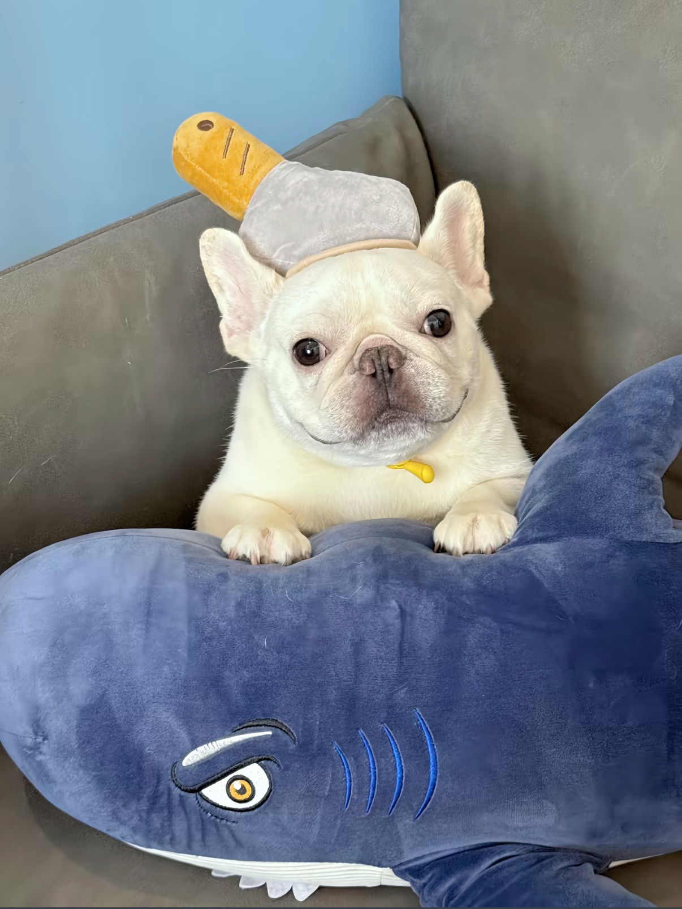

店狗阿鬥 🐕
阿鬥是一隻充滿活力的小傢伙，性格俏皮可愛， 總是帶著一副調皮的表情，讓每位來訪的客人都忍不住微笑。 牠那圓圓的臉龐和短短的鼻子，再加上特有的憨態， 讓牠成為了我們餐廳的小寵物明星。
阿鬥熱愛與客人互動，特別喜歡接受撫摸和關注。 牠的活力與熱情，常常讓整個餐廳充滿了歡樂的氛圍。 不論是和大家一起分享美味的食物，還是參加玩耍， 阿鬥都會融入其中，成為所有毛孩和人類的開心果。
在這裡，阿鬥不只是餐廳的一部分， 牠更是我們家庭的一員，期待與您一起度過這個充滿愛與美味的時光！

